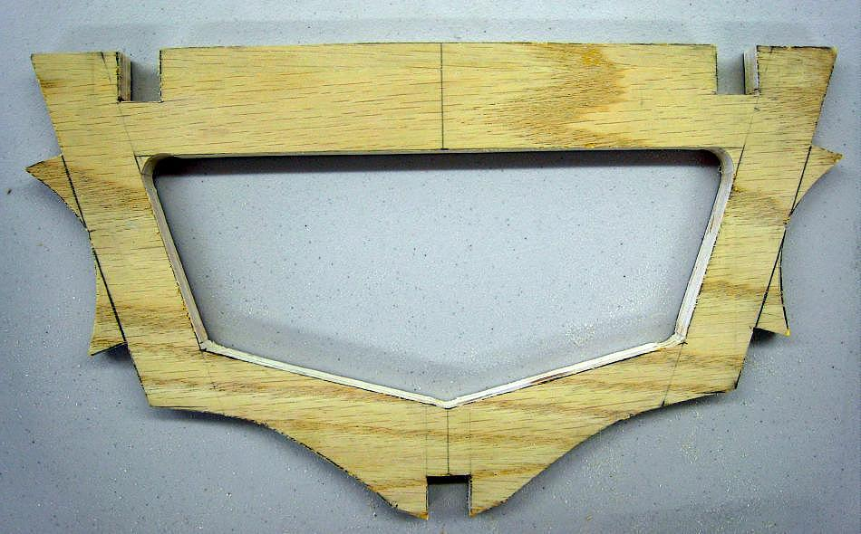

| Cross Sections | Menu Last Page Next Page |
|

Use a jig saw to cut out the inside area of the cross section. Use a file to round the edges, and to clean up the inside the stringer cutouts. Trial fit the stringers sections to insure a snug fit. The remaining pencil lines can be erased and the sections sanded at this time or later during final frame sanding.
|
|